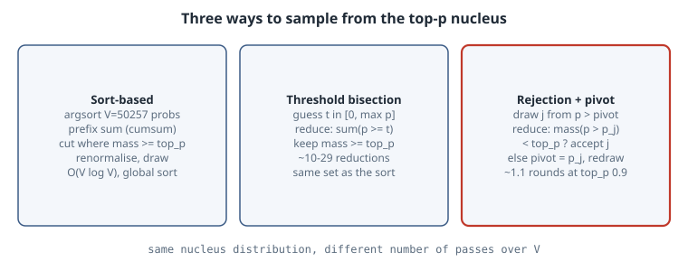

Top-k and Top-p Sampling Without a Sort
Top-k and Top-p Sampling Without a Sort
Thesis
After the last matmul, a serving engine still has to choose one token per sequence. Top-p (nucleus) sampling keeps the smallest set of tokens whose probabilities add up to at least \(p\), then samples inside that set. The textbook implementation sorts the whole vocabulary, takes a cumulative sum, and cuts. Over 50k–250k-entry rows, at every decode step and in every batch, that sort becomes a visible slice of inter-token latency. You do not need it. The nucleus is just \(\{i : p_i \ge t\}\) for one threshold \(t\), and a draw from the nucleus can be made by rejection sampling with a rising pivot. Both approaches use only reductions and prefix sums, which GPUs do in one pass. This chapter runs all of these variants on real GPT-2 logits and shows they produce the same distribution:
- sort + cumsum
- threshold bisection
- single-pivot rejection
- FlashInfer’s dual-pivot rejection
Mental model

Definitions.
- Top-k keeps the \(k\) most probable tokens (Fan et al., 2018).
- Top-p keeps the smallest prefix, in descending order, whose mass is \(\ge p\) (Holtzman et al., 2020).
- Min-p keeps every token with \(p_i \ge p_{\text{base}} \cdot p_{\max}\) (Nguyen et al., 2024).
All three are a mask, followed by renormalisation and a categorical draw.
The threshold view. Let \(M(t) = \sum_{p_i \ge t} p_i\). \(M\) is a non-increasing step function of \(t\). The nucleus is \(\{i: p_i \ge t^\star\}\), where \(t^\star\) is the largest \(t\) with \(M(t) \ge p\). Bisection on \(t \in [0, p_{\max}]\) finds it. Each step is one masked sum over the row: a reduction, with no data movement.
The rejection view. You do not even need \(t^\star\), only a draw from the nucleus.
- Draw \(j\) from all tokens above a pivot, which starts at \(0\).
- If the mass strictly above \(p_j\) is less than \(p\), then \(j\) is in the nucleus. Accept it.
- Otherwise \(j\) and everything at or below \(p_j\) is outside the nucleus. Set the pivot to \(p_j\) and redraw.
Conditioned on acceptance, each nucleus token comes out with probability proportional to \(p_i\). The FlashInfer blog gives the proof. The intuition is that a rejection only removes tokens that are all outside the nucleus, and it never changes the relative odds of the tokens inside.
Why the dual pivot matters. A single pivot has no worst-case bound on the number of rounds. FlashInfer v0.2.3 keeps an interval \([\text{low}, \text{high}]\). After rejecting \(j\), it also tests the midpoint \((p_j + \text{high})/2\), so each rejection at least halves the interval. That bounds the rounds at \(O(\log(1/\varepsilon))\).
Worked example
First, real logits. This script runs GPT-2 small (124M, the openai-community/gpt2 safetensors) in plain NumPy and saves the next-token logits for three prompts:
"""Next-token logits from GPT-2 small (124M) in pure NumPy, for three prompts -> logits.npy"""
import json, struct
import numpy as np, tiktoken
def load(path):
with open(path, "rb") as f:
n = struct.unpack("<Q", f.read(8))[0]; hdr = json.loads(f.read(n))
raw = np.memmap(path, dtype=np.uint8, mode="r"); base = 8 + n
return {k: np.frombuffer(raw[base + m["data_offsets"][0]: base + m["data_offsets"][1]],
np.float32).reshape(m["shape"]) for k, m in hdr.items() if k != "__metadata__"}
W = load("model.safetensors"); L, H, D = 12, 12, 64
ln = lambda x, p: (x - x.mean(-1, keepdims=True)) / np.sqrt(x.var(-1, keepdims=True) + 1e-5) * W[p + ".weight"] + W[p + ".bias"]
gelu = lambda x: 0.5 * x * (1 + np.tanh(0.7978845608 * (x + 0.044715 * x ** 3)))
def last_logits(tokens):
T = len(tokens); x = W["wte.weight"][tokens] + W["wpe.weight"][:T]
mask = np.triu(np.full((T, T), -np.inf, np.float32), 1)
for i in range(L):
p = f"h.{i}."
qkv = ln(x, p + "ln_1") @ W[p + "attn.c_attn.weight"] + W[p + "attn.c_attn.bias"]
q, k, v = (a.reshape(T, H, D).transpose(1, 0, 2) for a in np.split(qkv, 3, -1))
a = q @ k.transpose(0, 2, 1) / D ** 0.5 + mask
a = np.exp(a - a.max(-1, keepdims=True)); a /= a.sum(-1, keepdims=True)
x = x + (a @ v).transpose(1, 0, 2).reshape(T, H * D) @ W[p + "attn.c_proj.weight"] + W[p + "attn.c_proj.bias"]
x = x + gelu(ln(x, p + "ln_2") @ W[p + "mlp.c_fc.weight"] + W[p + "mlp.c_fc.bias"]) @ W[p + "mlp.c_proj.weight"] + W[p + "mlp.c_proj.bias"]
return ln(x[-1], "ln_f") @ W["wte.weight"].T # tied embeddings
enc = tiktoken.get_encoding("gpt2")
prompts = ["The capital of France is", "My favourite colour is", "Once upon a time, there was a"]
logits = np.stack([last_logits(enc.encode(s)) for s in prompts])
np.save("logits.npy", logits)
for s, z in zip(prompts, logits):
print(f"{s!r:36} top-5: {[enc.decode([int(t)]) for t in np.argsort(-z)[:5]]}")Output:
'The capital of France is' top-5: [' the', ' now', ' a', ' France', ' Paris']
'My favourite colour is' top-5: [' the', ' blue', ' black', ' red', ' a']
'Once upon a time, there was a' top-5: [' man', ' great', ' time', ' certain', ' woman']The top-5 are realistic for a 124M model. ” Paris” is fifth for France, which is exactly the situation where sampling choices matter.
Then the samplers. There are four implementations of top-p, each checked against the sort-based reference:
"""Top-k / top-p sampling three ways on real GPT-2 logits: sort+cumsum, threshold bisection, rejection with a pivot."""
import time
import numpy as np
logits = np.load("logits.npy").astype(np.float64) # (3 prompts, 50257)
rng = np.random.default_rng(0)
def softmax(z, temp=1.0):
z = z / temp; e = np.exp(z - z.max()); return e / e.sum()
# 1) Reference: sort descending, cumulative sum, cut (what a sort-based sampler does).
def top_p_sorted(p, top_p):
order = np.argsort(-p, kind="stable"); cs = np.cumsum(p[order])
keep = order[: np.searchsorted(cs, top_p) + 1] # smallest prefix with mass >= top_p
q = np.zeros_like(p); q[keep] = p[keep]; return q / q.sum()
def top_k_sorted(p, k):
keep = np.argpartition(-p, k - 1)[:k]
q = np.zeros_like(p); q[keep] = p[keep]; return q / q.sum()
# 2) Sort-free: bisect on a probability threshold t. Each step is one parallel reduction over V.
def top_p_threshold(p, top_p, iters=64):
lo, hi = 0.0, p.max() # invariant: mass(p >= lo) >= top_p > mass(p >= hi)
for i in range(iters):
mid = 0.5 * (lo + hi)
if p[p >= mid].sum() >= top_p: lo = mid
else: hi = mid
if p[(p >= lo) & (p < hi)].size == 1 or hi - lo < 1e-18: break
q = np.where(p >= lo, p, 0.0); return q / q.sum(), i + 1
# 3) Sort-free rejection sampling with a rising pivot (the FlashInfer idea).
def top_p_rejection(p, top_p, rng):
pivot, rounds = 0.0, 0
while True:
rounds += 1
cand = np.where(p > pivot, p, 0.0) # one pass: mask below pivot
j = np.searchsorted(np.cumsum(cand), rng.random() * cand.sum()) # inverse-CDF draw
if p[p > p[j]].sum() < top_p: # j is inside the nucleus -> accept
return j, rounds
pivot = p[j] # everything <= p[j] is outside: raise pivot
# 4) Dual-pivot rejection (FlashInfer v0.2.3): each rejection also halves [low, high], so rounds are bounded.
def top_p_dual_pivot(p, top_p, rng):
ok = lambda t: p[p > t].sum() < top_p # f(t)=1: a token with prob t is inside the nucleus
low, high, rounds = 0.0, p.max(), 0
while True:
rounds += 1
cand = np.where(p > low, p, 0.0)
j = np.searchsorted(np.cumsum(cand), rng.random() * cand.sum())
piv1 = p[j]; piv2 = 0.5 * (piv1 + high)
if ok(piv1): return j, rounds
if ok(piv2): low, high = piv1, piv2
else: low = piv2
def tv(a, b): return 0.5 * np.abs(a - b).sum()
for row, name in zip(logits, ["France", "colour", "once upon"]):
p = softmax(row)
for top_p in (0.5, 0.9, 0.95):
ref = top_p_sorted(p, top_p)
thr, steps = top_p_threshold(p, top_p)
n = 20000; draws, rounds = np.empty(n, int), np.empty(n, int)
for s in range(n): draws[s], rounds[s] = top_p_rejection(p, top_p, rng)
emp = np.bincount(draws, minlength=p.size) / n
d2, r2 = zip(*(top_p_dual_pivot(p, top_p, rng) for _ in range(n)))
emp2, r2 = np.bincount(d2, minlength=p.size) / n, np.array(r2)
# sampling noise floor: TV between two multinomial samples of size n from ref itself
noise = tv(rng.multinomial(n, ref) / n, ref)
print(f"{name:9} top_p={top_p:.2f} nucleus={int((ref>0).sum()):5d} tokens | "
f"threshold==sort: {np.array_equal(thr > 0, ref > 0)} ({steps:2d} bisection steps) | "
f"rejection TV={tv(emp, ref):.4f} (noise {noise:.4f}) rounds mean={rounds.mean():.2f} max={rounds.max()}")
print(f"{'':9} {'':10} dual-pivot TV={tv(emp2, ref):.4f} rounds mean={r2.mean():.2f} max={r2.max()}")
for k in (1, 50):
q = top_k_sorted(p, k); print(f"{name:9} top_k={k:<3d} kept mass={p[q>0].sum():.3f}")
# Cost on one 50257-wide row (CPU, NumPy): full sort vs bisection passes.
p = softmax(logits[2])
for f, label in [(lambda: top_p_sorted(p, 0.9), "argsort+cumsum"),
(lambda: top_p_threshold(p, 0.9), "threshold bisection"),
(lambda: top_p_rejection(p, 0.9, rng), "rejection (1 sample)"),
(lambda: top_p_dual_pivot(p, 0.9, rng), "dual pivot (1 sample)")]:
t0 = time.perf_counter()
for _ in range(200): f()
print(f"{label:22} {(time.perf_counter() - t0) / 200 * 1e3:7.3f} ms/row")Output (NumPy 2.5.4, 8-core CPU, about 50 s, almost all of it in the 20,000-draw loops):
France top_p=0.50 nucleus= 32 tokens | threshold==sort: True (10 bisection steps) | rejection TV=0.0118 (noise 0.0098) rounds mean=1.69 max=6
dual-pivot TV=0.0138 rounds mean=1.68 max=7
France top_p=0.90 nucleus= 1503 tokens | threshold==sort: True (20 bisection steps) | rejection TV=0.0722 (noise 0.0741) rounds mean=1.11 max=4
dual-pivot TV=0.0716 rounds mean=1.10 max=4
France top_p=0.95 nucleus= 3119 tokens | threshold==sort: True (22 bisection steps) | rejection TV=0.0983 (noise 0.0983) rounds mean=1.05 max=3
dual-pivot TV=0.1027 rounds mean=1.05 max=3
France top_k=1 kept mass=0.085
France top_k=50 kept mass=0.549
colour top_p=0.50 nucleus= 26 tokens | threshold==sort: True (11 bisection steps) | rejection TV=0.0109 (noise 0.0099) rounds mean=1.68 max=6
dual-pivot TV=0.0096 rounds mean=1.69 max=7
colour top_p=0.90 nucleus= 1972 tokens | threshold==sort: True (23 bisection steps) | rejection TV=0.0777 (noise 0.0794) rounds mean=1.11 max=4
dual-pivot TV=0.0765 rounds mean=1.11 max=4
colour top_p=0.95 nucleus= 4564 tokens | threshold==sort: True (29 bisection steps) | rejection TV=0.1094 (noise 0.1076) rounds mean=1.05 max=3
dual-pivot TV=0.1071 rounds mean=1.05 max=3
colour top_k=1 kept mass=0.105
colour top_k=50 kept mass=0.576
once upon top_p=0.50 nucleus= 245 tokens | threshold==sort: True (15 bisection steps) | rejection TV=0.0379 (noise 0.0346) rounds mean=1.69 max=7
dual-pivot TV=0.0361 rounds mean=1.69 max=6
once upon top_p=0.90 nucleus= 3652 tokens | threshold==sort: True (22 bisection steps) | rejection TV=0.1286 (noise 0.1329) rounds mean=1.11 max=4
dual-pivot TV=0.1299 rounds mean=1.11 max=4
once upon top_p=0.95 nucleus= 6289 tokens | threshold==sort: True (25 bisection steps) | rejection TV=0.1604 (noise 0.1587) rounds mean=1.05 max=3
dual-pivot TV=0.1628 rounds mean=1.05 max=3
once upon top_k=1 kept mass=0.044
once upon top_k=50 kept mass=0.304
argsort+cumsum 3.895 ms/row
threshold bisection 1.993 ms/row
rejection (1 sample) 0.228 ms/row
dual pivot (1 sample) 0.238 ms/rowReading it.
- Exactness. For all nine (prompt, \(p\)) pairs, the bisection threshold selects exactly the sort-based nucleus, in 10–29 steps. Each step is one masked sum over 50,257 floats.
- Same distribution. With 20,000 draws per configuration, the total-variation distance between the empirical histogram and the sort-based reference is at the multinomial noise floor for both rejection samplers. For example, France at \(p = 0.9\) gives TV \(0.0722\) against noise \(0.0741\). The TV values look large at \(p = 0.95\) only because the nucleus has thousands of tokens and 20,000 draws cannot fill them. The noise column shows the same number.
- Few rounds. At \(p = 0.9\) the mean is \(1.10\)–\(1.11\) rounds and the maximum is \(4\). At \(p = 0.5\) it is about \(1.7\), because more of the mass is rejectable. On these natural distributions the dual pivot does not cut the typical round count. Its benefit is the worst case, which matters for adversarial or very flat rows and for tail latency.
- Top-k is not top-p. \(k = 50\) keeps only 30% of the mass for “Once upon a time, there was a”, but 58% for the colour prompt. A fixed \(k\) adapts to nothing. That is the original argument for nucleus sampling.
- Cost. These are CPU NumPy timings, so treat them as relative. Bisection is about twice as fast as a full argsort plus cumsum. One rejection draw is about 17× faster, because it does a few passes and never orders the row. On a GPU, the gap comes from replacing a radix sort plus a scatter with fused block reductions and scans. The FlashInfer post reports more than a 50% reduction in vLLM’s sampling time.
Pitfalls
>versus>=at the boundary. The nucleus includes the token that crosses \(p\). Accept when the mass strictly above \(p_j\) is \(< p\), and threshold with \(p_i \ge t\). Swapping either comparison drops or adds the boundary token.- Ties. If several tokens share the boundary probability, the sort-based “smallest prefix” depends on the sort’s tie-break, while a threshold keeps all of them. Decide which you mean. Engines that need bitwise-reproducible sampling must pin this down.
- Order of operations. Temperature is applied to logits before softmax and filtering. Top-k then top-p (“top-k first”) is not the same as applying both jointly. FlashInfer exposes both. Check what your engine documents (vLLM’s
SamplingParams). - Prefix sums in floating point are not monotone. A parallel scan in fp32 can produce a CDF that decreases slightly, and then an inverse-CDF search can return an index with zero probability. The FlashInfer post calls this out explicitly. Clamp the search, or guard against selecting a masked token.
- Renormalise or not. Rejection never renormalises explicitly. It samples \(u \cdot \sum \text{cand}\). A mask-then-
multinomialpath must renormalise, or the probabilities passed to it do not sum to 1.
Try this
- Add min-p to the rejection loop. The acceptance test becomes \(p_j \ge p_{\text{base}} \cdot p_{\max}\), and it needs no prefix sum at all.
- Implement joint top-k + top-p rejection by accepting only when both the count strictly above \(p_j\) is \(< k\) and the mass strictly above it is \(< p\). Compare it to top-k-first.
- Build a flat adversarial row, for example 50,000 tokens with geometric probabilities of ratio \(0.9999\), and compare the maximum rounds of the single-pivot and dual-pivot samplers.
- Replace
np.cumsumwith a blocked fp32 scan (sum per 1,024-element block, then within the block) and count how often the inverse-CDF index lands on a masked token.
Sources
- A. Holtzman et al., “The Curious Case of Neural Text Degeneration”, ICLR 2020. arXiv:1904.09751
- A. Fan, M. Lewis, Y. Dauphin, “Hierarchical Neural Story Generation”, ACL 2018 (top-k). arXiv:1805.04833
- M. Nguyen et al., “Turning Up the Heat: Min-p Sampling for Creative and Coherent LLM Outputs”. arXiv:2407.01082
- S. Xing, Z. Ye, B. Hou, L. Ceze, T. Chen, “Sorting-Free GPU Kernels for LLM Sampling”, FlashInfer blog, 2025-03-10. flashinfer.ai
- FlashInfer API:
flashinfer.sampling.top_p_sampling_from_probs - vLLM
SamplingParams - GPT-2 small weights: openai-community/gpt2